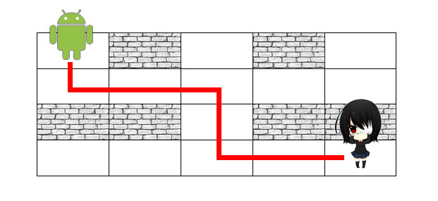

Hôm nay lớp của Misaki tổ chức chuyến vui chơi tại công viên giải trí Yomiyama. Cả lớp hào hứng chơi rất nhiều trò chơi. Cuối ngày, khi cả lớp điểm danh thì thiếu Misaki, hóa ra cô ấy đã bị lạc trong mê cung của công viên. Rất may công viên có một Robot có thể tìm đến vị trí của người bị lạc và trở về vị trí ban đầu. Bạn là một nhân viên bảo vệ của công viên và có trong tay bản đồ mê cung cũng như vị trí của Misaki, bạn hãy điều khiển Robot đến vị trí của Misaki để giúp cô ấy ra khỏi mê cung nhé! 
Yêu cầu: Cho bản đồ mê cung và vị trí của Misaki, bạn hãy điều khiển Robot tìm đường đi ngắn nhất để đến vị trí của cô ấy. Nếu có nhiều đường đi ngắn nhất, in ra đường đi có số lần chuyển hướng ít nhất. Nếu có nhiều đường đi thỏa cả 2 điều kiện trên, in ra một đường bất kì.
Dữ liệu nhập:
- Dòng thứ nhất là 2 số nguyên N,M là số dòng và số cột của mê cung (1 ≤ N,M ≤ 100).
- N dòng tiếp theo, mỗi dòng chứa M số nguyên 0 hoặc 1. Số 0 nghĩa là không có tường chắn, số 1 là có tường.
- Dòng cuối gồm 2 số nguyên u,v là vị trí hiện tại của Misaki.
Dữ liệu xuất:
- Dòng thứ nhất chứa 2 số nguyên P,Q với P là số câu lệnh điều khiển và Q là số lần chuyển hướng của Robot.
- P dòng tiếp theo, mỗi dòng là một câu lệnh cho Robot, cụ thể: In ra "S" nếu Robot đi thẳng, "L" nếu Robot rẽ trái, "R" nếu Robot rẽ phải. (Ban đầu Robot ở vị trí (1,1) và hướng xuống).
Chú ý:
- Dữ liệu cho đảm bảo luôn có đường đi.
- Các output phải bỏ dấu " ".
Ảnh minh họa:

Ví dụ
-
input4 5
0 1 0 1 0
0 0 0 0 0
1 1 0 1 1
0 0 0 0 0
4 5output7 3
S
L
S
R
S
L
S
Robot chuyển hướng ở (2,1), (2,3) và (4,3)